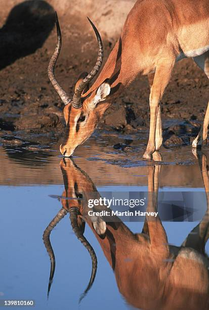

Las gacelas son antílopes esbeltos, ligeros y muy ágiles que habitan en las llanuras abiertas, sabanas y semidesiertos de África y Asia. Características principales • Velocidad: Pueden alcanzar velocidades de 80 a 90 km/h (y puntas de hasta 97 km/h en distancias cortas), lo que les permite huir de depredadores como guepardos, leones, leopardos, hienas y chacales. • Físico: Tienen cabezas pequeñas, ojos y orejas grandes, hocicos estrechos y un pelaje tostado o marrón claro con el vientre blanco. • Cuernos: Generalmente ambos sexos poseen cuernos anillados y curvados hacia atrás, más largos y marcados en los machos. • Alimentación: Son herbívoras; se alimentan de hierbas, brotes, hojas y arbustos, y muchas especies pueden obtener gran parte del agua que necesitan directamente de las plantas. • Estrategia de supervivencia: Las madres ocultan a sus crías recién nacidas en la vegetación (tuckers) para camuflarlas mientras pastorean.